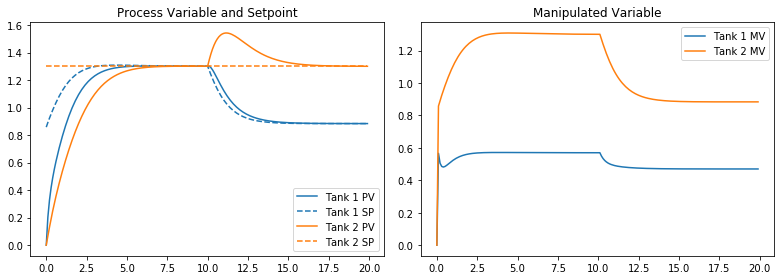
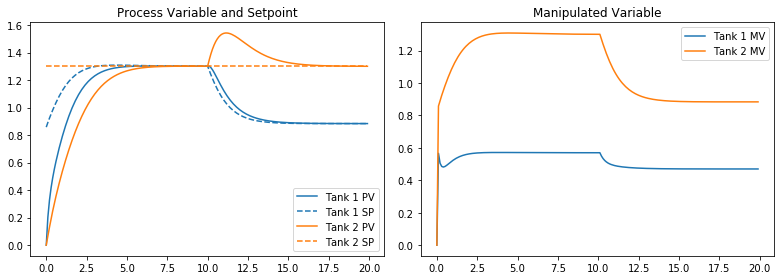

Modular Simulation using Python Generators#
Summary#
This notebook demonstrates shows how to use the Python generators for simulation. This technique implements simulation blocks as Python generators, and shows how to piece blocks together to simulate more complex systems. This is an advanced technique that may be useful in certain projects and a convenient alternative to block diagram simulators.
Table of Contents#
Simulation using scipy.integrate.odeint()
Typical Usage
What’s Wrong with That?
Python Generators
Yield Statement
Iterators
Two-way communcation with Generators using Send
Example Application: Modeling Gravity-Drained Tanks with Python Generators
Generator for a Gravity-Drained Tank
Simulation of a Single Tank with Constant Inflow
Simulation of Two Tanks in Series
Simulation of Two Tanks in Series with PI Level Control on the Second Tank
Adding a PI Control Generator
Implementing Cascade Control for Two Tanks in Series with Unmeasured Disturbance
Enhancing Modularity with Class Definitions for Process Units
Gravity-Drained Tank Class
PI Controller Class
Modular Simulation of Cascade Control for Two Tanks in Series
Simulation using scipy.integrate.odeint()#
Typical Usage#
The SciPy library provides a convenient and familiar means of simulating systems modeled by systems of ordinary differential equations. As demonstrated in other notebooks, the straightforward approach consists of several common steps
Initialize graphics and import libraries
Fix parameter values
Write a function to evaluate RHS of the differential equations
Choose initial conditions and time grid
Perform the simulation by numerical solution of the differential equations
Prepare visualizations and post-processing
Here we demonstrate this approach for a two gravity-drained tanks connected in series with constant inflow.
# 1. Initialize graphics and import libraries
%matplotlib inline
import matplotlib.pyplot as plt
import numpy as np
from scipy.integrate import odeint
# 2. Fix parameter values
A = 0.2
Cv = 0.5
qin = 0.4
# 3. Write a function to evaluate RHS of the differential equations
def deriv(X,t,qin=0):
h1,h2 = X
dh1 = (qin - Cv*np.sqrt(h1))/A
dh2 = (Cv*np.sqrt(h1) - Cv*np.sqrt(h2))/A
return [dh1,dh2]
# 4. Choose initial conditions and time grid
IC = [0,0]
t = np.linspace(0,8,500)
# 5. Perform the simulation by numerical solution of the differential equations
sol = odeint(deriv,IC,t,args=(qin,))
# 6. Prepare visualizations and post-processing
plt.plot(t,sol)
plt.legend(['Tank 1','Tank 2'])
plt.xlabel('Time')
plt.ylabel('Height [m]')
plt.title('Simulation of Two Gravity-Drained Tanks in Series')
plt.grid()
What’s Wrong with That?#
If direct simulation as outlined above meets the needs of your project, then be satisfied and move on. This is how these tools are intended to be used.
However, as written above, simulation with scipy.integrate.odeint requires you to write a function that calculates the right hand side of a system of differential equations. This can be challenging for complex system. For example, you may have multiple PID controllers, each implementing logic for anti-reset windup. Or you may have components in the process that exhibit hysterisis, time-delay, or other difficult-to-model dynamics. These cases call for a more modular approach to modeling and simulation.
In these cases we’d like to combine the continous time dynamics modeled by differential equations with more complex logic executed at discrete points in the time.
Python Generators#
Yield Statement#
One of the more advanced and often overlooked features of Python is the use of generators and iterators for performing operations on sequences of information. In particular, a generator is a function that returns information to via the yield statement rather then the more commonly encountered return statement. When called again, the generator picks right up at the point of the yield statement.
Let’s demonsrate this by writing a generator of Fibonacci numbers. This generator returns all Fibonacci numbers less or equal to a given number \(n\).
def fib(n):
i = 0
j = 1
while j <= n:
yield j
i,j = j,i+j
Here’s a typical usage. What are the Fibonacci numbers less than or equal to 100?
for k in fib(100):
print(k)
1
1
2
3
5
8
13
21
34
55
89
The generator can also be used inside list comprehensions.
[k for k in fib(1000)]
[1, 1, 2, 3, 5, 8, 13, 21, 34, 55, 89, 144, 233, 377, 610, 987]
Iterators#
When called, a generator function creates an intermediate function called an iterator. Here we construct the iterator and use it within a loop to find the first 10 Fibonacci numbers.
f = fib(500)
for k in range(0,10):
print(next(f))
1
1
2
3
5
8
13
21
34
55
Using next on an iterator returns the next value.
Two-way communcation with Generators using Send#
So far we have demonstrated the use of yield as a way to communicate information from the generator to the calling program. Which is fine if all you need is one-way communication. But for the modular simulation of processes, we need to be able to send information both ways. A feedback control module, for example, will need to obtain current values of the process variable in order to update its internal state to provide an update of the manipulated variable to calling programm.
Here’s the definition of a generator for negative feedback proportional control where the control gain \(K_p\) and setpoint \(SP\) are specified constants.
def proportionalControl(Kp,SP):
MV = None
while True:
PV = yield MV
MV = Kp*(SP-PV)
The yield statement is now doing double duty. When first called it sends the value of MV back to the calling program, then stops and waits. It is waiting for the calling program to send a value of PV using the .send() method. Execution resumes until the yield statement is encountered again and the new value of MV returned to the calling program.
With this behavior in mind, gettting the generator ready for use is a two step process. The first step is to create an instance (i.e., an iterator). The second step is to initialize the instance by issuing .send(None) command. This is will halt execution at the first yield statement. At that point the generator instance will be ready to go for subsequent simulation.
Here’s the initialization of a new instance of proportional control with \(K_p = 2.5\) and \(SP = 2\).
pc = proportionalControl(2.5,2)
pc.send(None)
This shows it in use.
for PV in range(0,5):
print(PV, pc.send(PV))
0 5.0
1 2.5
2 0.0
3 -2.5
4 -5.0
You can verify that these results satisfy the proportional control relationship.
Example Application: Modeling Gravity-Drained Tanks with Python Generators#
The first step in using a Python generator for simulation is to write the generator. It will be used to create instances of the dynamical process being modeled by the generator. Parameters should include a sample time dt and any other model parameters you choose to specify a particular instance of the process. The yield statement should provide time plus any other relevant process data. The yield statement will produce new values of process inputs valid for the next time step.
Generator for a Gravity-Drained Tank#
# generator for a gravity-drained tank model
def gravtank_generator(dt, A=1, Cv=1, IC=0):
def qout(h):
return Cv*np.sqrt(float(h))
def deriv(h,t):
dh = (qin - qout(h))/A
return dh
h = IC
t = 0
while True:
qin = yield t,qout(h),float(h)
h = odeint(deriv,h,[t,t+dt])[-1]
t += dt
Simulation of a Single Tank with Constant Inflow#
Next we show how to use the generator to create a simulation consisting of a single gravity drained tank with constant inflow.
Choose a sample time for the simulation.
Create instances of the processes to be used in your simulation.
The first call to an instance is f.send(None). This will return the initial condition.
Subsequent calls to the instance should be f.send(u) where u is variable, tuple, or other data time being passed to the process. The return value will be a tuple contaning the next value of time plus other process data.
# 1. select sample time
dt = 0.02
# 2. create a process instance
tank = gravtank_generator(dt, A=0.2, Cv=.5)
# 3. get initial condition
y = [tank.send(None)]
# 4. append subsequent states
y += [tank.send(0.5) for t in np.arange(0,10,dt)]
# 5. extract information into numpy arrays for plotting
t,q,h = np.asarray(y).transpose()
plt.plot(t,q,t,h)
plt.xlabel('Time')
plt.legend(['Outlet Flow','Level'])
plt.grid()

Simulation of Two Tanks in Series#
dt = 0.02
tank1 = gravtank_generator(dt, A=0.2, Cv=.5)
tank2 = gravtank_generator(dt, A=0.2, Cv=.5)
y1 = [tank1.send(None)]
y2 = [tank2.send(None)]
for t in np.arange(dt,10,dt):
t1,q1,h1 = tank1.send(0.5)
t2,q2,h2 = tank2.send(q1)
y1.append([t1,q1,h1])
y2.append([t2,q2,h2])
t1,q1,h1 = np.asarray(y1).transpose()
t2,q2,h2 = np.asarray(y2).transpose()
plt.plot(t1,q1,t1,h1)
plt.plot(t2,q2,t2,h2)
[<matplotlib.lines.Line2D at 0x111f5a7f0>,
<matplotlib.lines.Line2D at 0x11213bf28>]
Simulation of Two Tanks in Series with PI Level Control on the Second Tank#
dt = 0.02
tank1 = gravtank_generator(dt, A=0.2, Cv=.5)
tank2 = gravtank_generator(dt, A=0.2, Cv=.5)
y1 = [tank1.send(None)]
y2 = [tank2.send(None)]
u = 0.0
r2 = 1.5
Kp = .6
Ki = .6
ecurr = 0
ulog = [u]
for t in np.arange(dt,10,dt):
t1,q1,h1 = tank1.send(u)
t2,q2,h2 = tank2.send(q1)
eprev,ecurr = ecurr,r2-h2
u += Kp*(ecurr-eprev) + Ki*ecurr*dt
u = max(0,min(1,u))
y1.append([t1,q1,h1])
y2.append([t2,q2,h2])
ulog.append(u)
t1,q1,h1 = np.asarray(y1).transpose()
t2,q2,h2 = np.asarray(y2).transpose()
plt.plot(t1,q1,t1,h1)
plt.plot(t2,q2,t2,h2)
plt.plot(t1,ulog)
[<matplotlib.lines.Line2D at 0x1123d0240>]

Adding a PI Control Generator#
def PI_generator(dt, Kp, Ki, MVmin = 0, MVmax = np.Inf):
ecurr = 0
eprev = 0
t = 0
u = MVmin
while True:
r,y,u = yield t,u
eprev,ecurr = ecurr,r-y
u += Kp*(ecurr - eprev) + Ki*ecurr*dt
u = max(MVmin,min(MVmax,u))
t += dt
dt = 0.02
tank1 = gravtank_generator(dt, A=0.2, Cv=.5)
tank2 = gravtank_generator(dt, A=0.2, Cv=.5)
pi = PI_generator(dt, Kp = 0.6, Ki = 0.6, MVmin = 0, MVmax = 1)
y1 = [tank1.send(None)]
y2 = [tank2.send(None)]
ulog = [pi.send(None)[1]]
u = 0
for t in np.arange(dt,10,dt):
t1,q1,h1 = tank1.send(u)
t2,q2,h2 = tank2.send(q1)
t3,u = pi.send((r2,h2,u))
y1.append([t,q1,h1])
y2.append([t,q2,h2])
ulog.append(u)
t1,q1,h1 = np.asarray(y1).transpose()
t2,q2,h2 = np.asarray(y2).transpose()
plt.plot(t1,q1,t1,h1)
plt.plot(t2,q2,t2,h2)
plt.plot(t1,ulog)
[<matplotlib.lines.Line2D at 0x1124d7c50>]
Implementing Cascade Control for Two Tanks in Series with Unmeasured Disturbance#
# disturbance function
def d(t):
if t > 10:
return 0.1
else:
return 0
# simulation
dt = 0.02
tank1 = gravtank_generator(dt, A=0.2, Cv=.5)
tank2 = gravtank_generator(dt, A=0.2, Cv=.5)
# level control for tank 1.
pi1 = PI_generator(dt, Kp = 1, Ki = 0.6, MVmin = 0, MVmax = 1)
# cascade level control for tank 2. Manipulated variable is the setpoint to pi1
pi2 = PI_generator(dt, Kp = 0.6, Ki = 0.6, MVmin = 0, MVmax = 2)
y1 = [tank1.send(None)]
y2 = [tank2.send(None)]
ulog = [pi1.send(None)[1]]
pi2.send(None)
u = 0
r1 = 0
r2 = 1.3
for t in np.arange(dt,20,dt):
t1,q1,h1 = tank1.send(u)
t2,q2,h2 = tank2.send(q1 + d(t))
t3,r1 = pi2.send((r2,h2,r1))
t4,u = pi1.send((r1,h1,u))
y1.append([t,q1,h1])
y2.append([t,q2,h2])
ulog.append(u)
t1,q1,h1 = np.asarray(y1).transpose()
t2,q2,h2 = np.asarray(y2).transpose()
plt.plot(t1,q1,t1,h1)
plt.plot(t2,q2,t2,h2)
plt.plot(t1,ulog)
[<matplotlib.lines.Line2D at 0x1125c0710>]

Enhancing Modularity with Class Definitions for Process Units#
One of the key goals of a modular approach to simulation is to implement process specific behavior within the definitions of the process, and separate from the organization of information flow among units that takes place in the main simulation loop.
Below we define two examples of class definitions demonstrating how this can be done. The class definitions add features for defining names and parameters for instances of each class, and functions to log and plot data gathered in the course of simulations.
Gravity-Drained Tank Class#
class gravtank():
def __init__(self, name='', A=1, Cv=1):
self.name = name
self.A = A
self.Cv = Cv
self._log = []
self.qin = 0
def qout(self,h):
return self.Cv*np.sqrt(float(h))
def deriv(self,h,t):
dh = (self.qin - self.qout(h))/self.A
return dh
def plot(self):
t,qout,h = np.asarray(self._log).transpose()
plt.plot(t,qout,label=self.name + ' qout')
plt.plot(t,h,label=self.name + ' h')
plt.legend()
def generator(self,dt,IC = 0):
h = IC
while True:
t,self.qin = yield self.qout(h),float(h)
h = odeint(self.deriv,h,[t,t+dt])[-1]
self._log.append([t,self.qout(h),float(h)])
t += dt
PI Controller Class#
class PI():
def __init__(self, name='', Kp = 0, Ki = 0, MVmin = 0, MVmax = np.Inf):
self.name = name
self.Kp = Kp
self.Ki = Ki
self.MVmin = MVmin
self.MVmax = MVmax
self._log = []
def plot(self):
t,r,y,u = np.asarray(self._log).transpose()
plt.subplot(1,2,1)
p = plt.plot(t,y,label=self.name + ' PV')
plt.plot(t,r,'--',color=p[-1].get_color(),label=self.name + ' SP')
plt.legend()
plt.title('Process Variable and Setpoint')
plt.subplot(1,2,2)
plt.plot(t,u,label=self.name + ' MV')
plt.title('Manipulated Variable')
plt.legend()
plt.tight_layout()
def generator(self,dt):
ecurr = 0
eprev = 0
u = self.MVmin
while True:
t,r,y,u = yield u
self._log.append([t,r,y,u])
eprev,ecurr = ecurr,r-y
u += Kp*(ecurr - eprev) + Ki*ecurr*dt
u = max(self.MVmin,min(self.MVmax,u))
t += dt
Modular Simulation of Cascade Control for Two Tanks in Series#
The following simulation shows how to use the class definitions in a simulation. Each process instance used in the simulation requires three actions:
Create an instance of the process. This is the step at which you can provide an instance name, parameters specific to the process and instance. Methods associated with the instance will be used to examine simulation logs and plot simulation results.
Create a generator. A call to the generator function for each process instance creates an associated iterator. A sample time must be specified.
An initial call to the iterator with an argument of
Noneis needed to advance execution to the firstyieldstatement.
# disturbance function
def d(t):
if t > 10:
return 0.1
else:
return 0
# sample time
dt = 0.1
# create and initialize tank1
tank1_obj = gravtank(name='Tank 1',A=0.2, Cv=.5)
tank1 = tank1_obj.generator(dt)
tank1.send(None)
# create and initailize tank2
tank2_obj = gravtank(name='Tank 2',A=0.2, Cv=0.5)
tank2 = tank2_obj.generator(dt)
tank2.send(None)
# level control for tank 1.
pi1_obj = PI('Tank 1',Kp = 1, Ki = 0.6, MVmin = 0, MVmax = 1)
pi1 = pi1_obj.generator(dt)
pi1.send(None)
# cascade level control for tank 2. Manipulated variable is the setpoint to for pi1
pi2_obj = PI('Tank 2',Kp = 0.6, Ki = 0.6, MVmin = 0, MVmax = 2)
pi2 = pi2_obj.generator(dt)
pi2.send(None)
# initial signals
u, r1 = 0, 0
# setpoint for tank 2 level
r2 = 1.3
for t in np.arange(0,20,dt):
qout1,h1 = tank1.send((t,u))
qout2,h2 = tank2.send((t,qout1 + d(t)))
r1 = pi2.send((t,r2,h2,r1))
u = pi1.send((t,r1,h1,u))
plt.figure()
tank1_obj.plot()
tank2_obj.plot()
plt.figure(figsize=(11,4))
pi1_obj.plot()
pi2_obj.plot()
 
